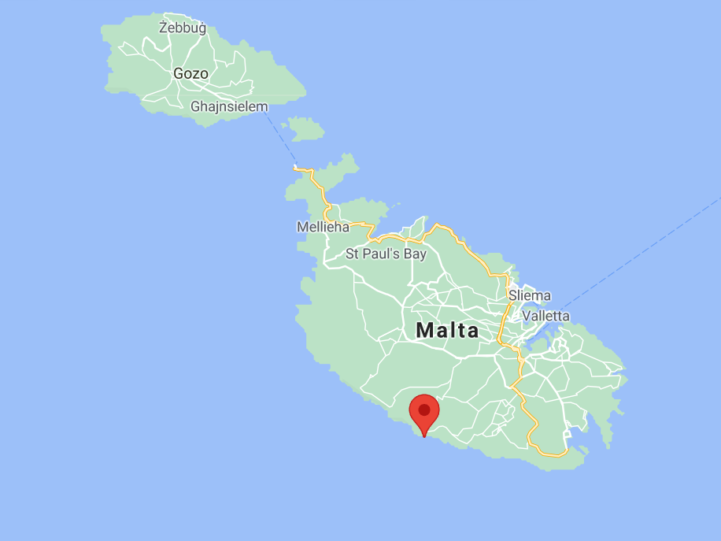

Għar Lapsi

Għar lapsi has lots of rocks which are very slippery so you must watch out for the slippery parts! It is a nice "beach" but sometimes its very cold but you have to watch out when you are diving because you might spot a sea urchin or a jellyfish. From Għar lapsi you can see Filfla another island in Malta.
